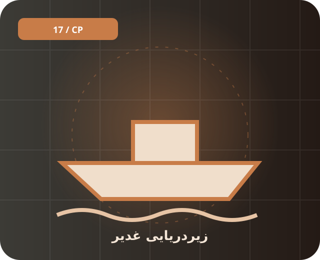

📚 پیشینه و معرفی
غدیر کلاس زیردریایی کوچک است که در گزارشهای عمومی به فعالیت در آبهای کمعمق نسبت داده میشود. اطلاعات فنی تفصیلی و وضعیت هر فروند بهصورت کامل عمومی نیست.
کلاس زیردریایی کوچک ایرانی که برای عملیات در آبهای کمعمق معرفی شده است.

غدیر کلاس زیردریایی کوچک است که در گزارشهای عمومی به فعالیت در آبهای کمعمق نسبت داده میشود. اطلاعات فنی تفصیلی و وضعیت هر فروند بهصورت کامل عمومی نیست.
زیردریایی کوچک در دسته دریایی قرار میگیرد. کلاس زیردریایی کوچک ایرانی که برای عملیات در آبهای کمعمق معرفی شده است.
برای شناخت دقیقتر، تاریخ انتشار منبع، نسخه دقیق تجهیز و تفاوت میان اعلام رسمی و ارزیابی مستقل را بررسی کن. یک نام گاهی به چند نسخه متفاوت اشاره دارد.
غدیر، زیردریایی، دریایی